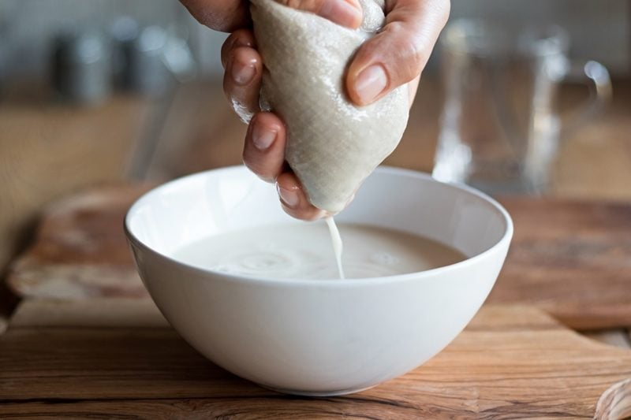

Non-Dairy Milk Supplies
Non-dairy milks are a raw vegan staple. If you haven’t experienced freshly made milks, whether they are made from nuts, seeds, coconut, or even some grains, you are missing out. Boxed versions that you can find on the grocery store shelves are typically loaded with unnecessary ingredients and are void of any flavor. And that my friend is just a crime.
With just a few pieces of equipment, you can make fresh, amazing milks. Homemade non-dairy milk can be every bit as creamy, sweet, and delicious as dairy milk. If you’re one who is pressed for time, make a large batch and freeze it for use throughout the week. A fresh batch will keep for roughly three to five days in the fridge. And remember, don’t get stuck just drinking one type of milk… by adding variety you prevent intolerances from forming, you avoid boredom from setting in, and you increase your variety of nutrients.
There are five basic steps involved when making alternative milk. Soaking, blending, rinsing, straining, and storing. Below, I have listed out the tools you’ll need, as well as some alternative tools that can be used.
Soaking Equipment
When it comes to soaking the base of the milk (nuts, seeds, etc.), you will want to use a glass container, such as a bowl or jar. The size of the container all depends on how much milk you plan on making. Remember, seeds, nuts, oats, etc. swell during the soaking process. I prefer using jars because it is easier to pour the soaked ingredient and water through a strainer to rinse them before making the milk.
Rinsing Equipment
After soaking the nuts or whatever you are using, they will need to be rinsed. It’s been soaking in yucky dirty water, and we don’t want to taint our milks with that. I listed two different sets of strainers below. A stainless steel and plastic set. Either option works, but the stainless is more durable. Decide what price point works for you. You can use other types of strainers or colanders, but keep in mind how big the nuts, seeds, or grains are that you will be rinsing. By using the smaller mesh ones, it will handle ALL sizes of seeds and so forth.
Blending Equipment
Good ole blenders, they are a raw foodist’s best friend. If you don’t own a blender, you will want to. They are worth their weight in gold. I have listed two high-powered blenders which is what I HIGHLY recommend. Read more about why (here). But if you can’t quite make that type of investment at the moment, I have tested a middle ground blender that is made by Breville. It’s not the same as the workhorse that Vitamix or Blendtec put out, but I found it to be a nice machine.
Straining Equipment
You might be thinking, “Well, why can’t I just use the mesh strainers that you recommended above?” Trust me; they won’t work. The holes are too big even though they are pretty darn small. The pulp that is created during the blending process will be very, very fine. I listed the two different bags I use and have been happy with their quality. If you are strapped for money, you can use cheesecloth or even a pair of nylons. But in the end, you will be paying more because they won’t be as durable.
Storing Equipment
Lastly, you will want to store the milk in an airtight container. You can use any glass container as long as it seals. If you don’t have the extra money or kitchen space, you can use the jars you used to soak the ingredients. But if you love to be creative, there are tons of glass jugs and containers out there. Fun ones! I listed one set that I really like.

So, that’s it my friends. The items listed below are items that I use and are my trusted standbys. If nothing else, the recommendations below and the descriptions above will give you a good idea of what is needed based on the processes used when making non-dairy milks.
Let’s Go Shopping
Soaking
Rinsing
Blending
- A high-powered blender
- Mid-range blender
Straining
Storing
Nouveauraw.com is a participant in the Amazon Services LLC Associates Program, an affiliate advertising program designed to provide a means for us to earn fees by linking to Amazon.com and affiliated sites – at no extra cost to you.
Thank you for your support! amie sue
© AmieSue.com